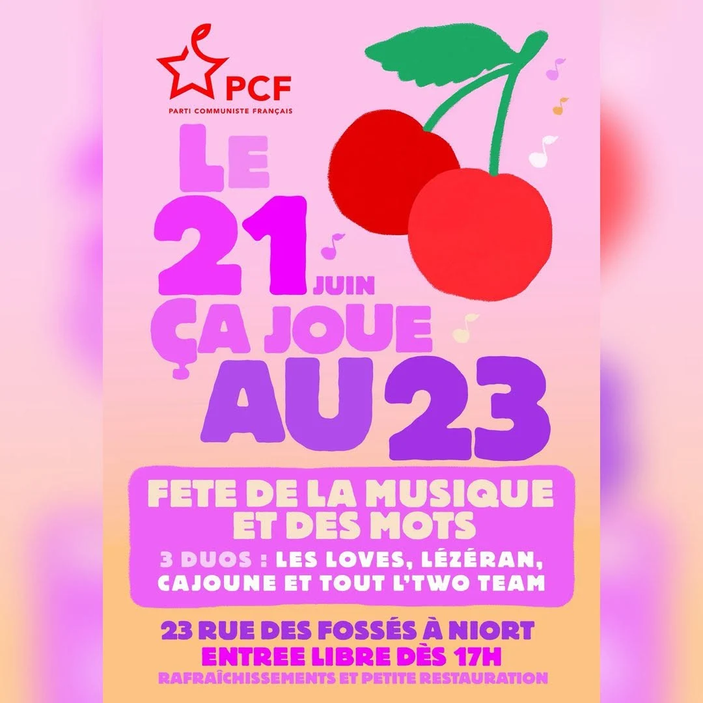
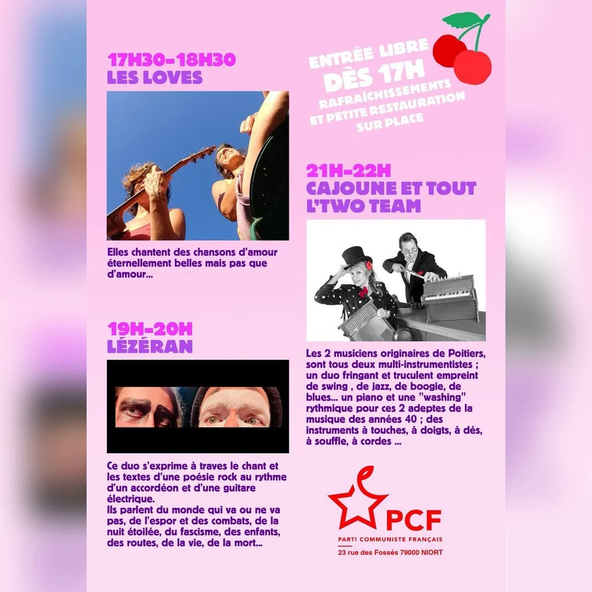

Annonce fédérale
À Niort, l’annonce de notre Fête de la musique et des mots du 21 juin
Date de mise à jour indiquée par Facebook · 9 juin 2026
Repères éditoriaux
Nous avions donné rendez-vous dimanche 21 juin dès 17 h au 23, rue des Fossés à Niort pour notre deuxième Fête de la musique et des mots. L’affiche annonçait trois duos, avec entrée libre. Nous avons ensuite annulé la fête en raison de la canicule.
Texte de la publication · PCF Niort
Venez fêter la musique et le début de l’été, pour la 2ème édition de la fête de la musique du PCF79. De la musique, des mots, des artistes, des victuailles et des boissons, venez vibrer au 23 rue des fossés !
#fetedelamusique #21juin #pcf #niort #deuxsèvres


Sources
PCF Niort · publication relayée par le PCF 79 · bibliothèque Facebook · AR-0002-FB-00760
À lire aussi · À Niort, nous avons annulé notre Fête de la musique en raison de la canicule